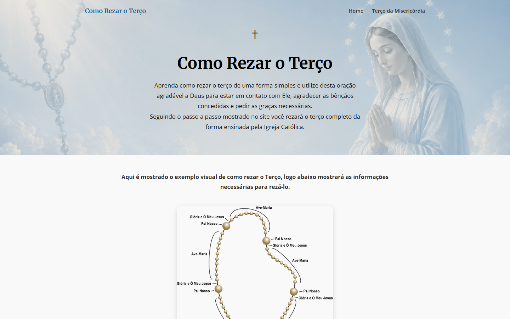

01
Como Rezar o Terço
Um guia para aprender a rezar o terço passo a passo. Cada um dos quatro conjuntos de mistérios tem suas imagens, e o Terço da Misericórdia ganhou uma página própria.
- Conteúdo
- 4 conjuntos de mistérios, 20 imagens
- Feito com
- HTML, CSS, JavaScript